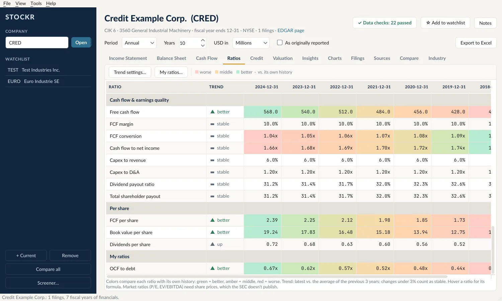
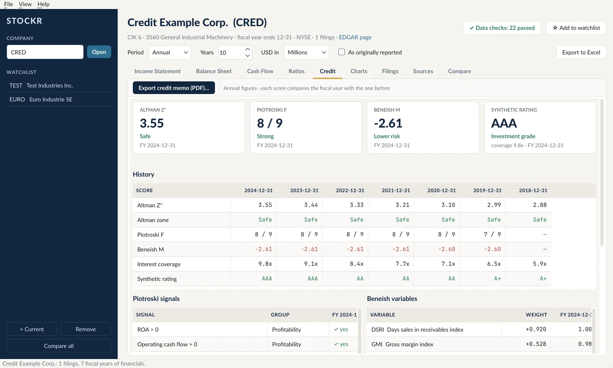
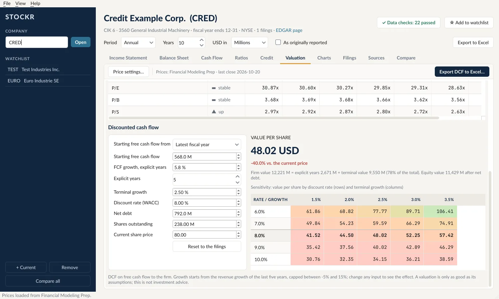
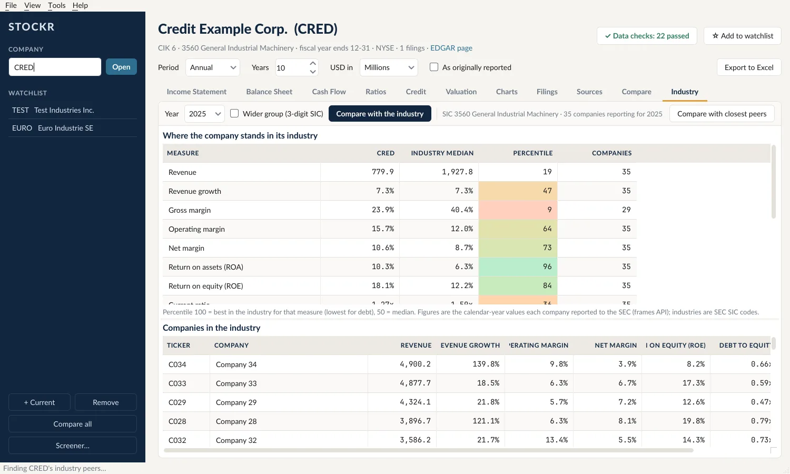
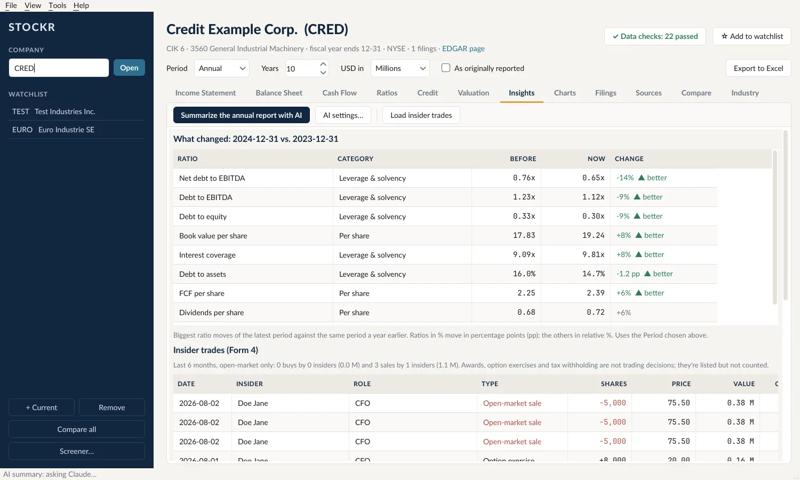

What you get from one tickerLo que obtiene con un ticker
Stockr works from the XBRL data companies file with the SEC, so the numbers are the company's own, in full dollars, with every source traceable to the filing. Stockr trabaja con los datos XBRL que las empresas presentan a la SEC: las cifras son las de la empresa, en dólares completos, y cada fuente se puede rastrear hasta el documento.
Statements and 60 ratios, consolidatedEstados financieros y 60 razones, consolidados
Income statement, balance sheet and cash flow for up to 25 years, annual or quarterly, with restatements or as first reported. Ratios show their trend and are colored against their own history. Estado de resultados, balance general y flujo de efectivo hasta 25 años, anual o trimestral, con reexpresiones o como se reportó originalmente. Las razones muestran su tendencia y se colorean contra su propio historial.
- Data checks: the balance sheet balances, cash flows add upRevisiones de datos: el balance cuadra, los flujos suman
- Build your own ratios with a formulaCree sus propias razones con una fórmula
- Export everything to ExcelExporte todo a Excel

Credit analysis and a PDF memoAnálisis de crédito y memo en PDF
Altman Z'', Piotroski F, Beneish M and a synthetic rating from interest coverage, each with its history and the signals behind it, plus debt maturities. Banks get a bank credit profile instead. Altman Z'', Piotroski F, Beneish M y una calificación sintética según la cobertura de intereses, cada uno con su historial y las señales que lo explican, además de los vencimientos de deuda. Los bancos reciben un perfil de crédito bancario.
One click writes a two-page credit memo with charts and your notes.Con un clic escribe un memo de crédito de dos páginas con gráficas y sus notas.

Valuation and a DCF you can changeValoración y un DCF que puede ajustar
With a free key from Financial Modeling Prep, Alpha Vantage or Tiingo, Stockr adds market cap, P/E, EV/EBITDA and yields over time. The DCF starts from the filings, shows a sensitivity table against today's price, and exports to Excel with live formulas. Con una llave gratuita de Financial Modeling Prep, Alpha Vantage o Tiingo, Stockr agrega capitalización, P/U, VE/EBITDA y rendimientos en el tiempo. El DCF parte de las cifras reportadas, muestra una tabla de sensibilidad contra el precio actual y se exporta a Excel con fórmulas vivas.

Industry, peers and a screenerIndustria, pares y filtro de empresas
See where a company ranks in its industry on margins, returns and leverage, compare it with its closest peers in one click, or screen every US company on the measures you choose. Vea dónde se ubica una empresa en su industria en márgenes, rentabilidad y apalancamiento, compárela con sus pares más cercanos con un clic, o filtre todas las empresas de EE. UU. con las medidas que elija.

What changed, insiders and AI summariesQué cambió, directivos y resúmenes con IA
The biggest ratio moves of the year, insider buying and selling from Form 4, alerts when a watchlist company files, and an AI summary of the annual report's risks and management discussion with your own Claude, ChatGPT or Gemini key. Los mayores movimientos de razones del año, compras y ventas de directivos (Form 4), alertas cuando una empresa favorita presenta un reporte, y un resumen con IA de los riesgos y el análisis de la administración del reporte anual, con su propia llave de Claude, ChatGPT o Gemini.

PricingPrecios
Every download starts with 14 days of Pro. After that, Stockr keeps working as the free version until you add a license key. Cada descarga empieza con 14 días de Pro. Después, Stockr sigue funcionando como versión gratuita hasta que agregue una llave de licencia.
FreeGratis
- Statements, ratios and chartsEstados financieros, razones y gráficas
- Credit scores and valuationPuntajes de crédito y valoración
- Comparisons and industry rankingComparaciones y ranking en la industria
- Up to 3 watchlist companiesHasta 3 empresas favoritas
Pro
- Everything in FreeTodo lo de Gratis
- Excel and PDF exports, DCF workbookExportación a Excel y PDF, libro del DCF
- Screener across every US companyFiltro de todas las empresas de EE. UU.
- AI summaries of annual reportsResúmenes de reportes anuales con IA
- Unlimited watchlist and filing alertsFavoritas ilimitadas y alertas de reportes
QuestionsPreguntas
Where does the data come from?¿De dónde vienen los datos?
From SEC EDGAR: the filing history and the XBRL financial data every US-listed company files. It's free and official. Stockr downloads it directly to your computer. De SEC EDGAR: el historial de reportes y los datos financieros XBRL que presenta toda empresa listada en EE. UU. Son gratuitos y oficiales. Stockr los descarga directamente a su computadora.
Why do I need a key for prices?¿Por qué necesito una llave para los precios?
The SEC doesn't publish share prices. Financial Modeling Prep, Alpha Vantage and Tiingo all offer free keys; you paste yours in Stockr and it reads prices for you. Everything else works without one. La SEC no publica precios de acciones. Financial Modeling Prep, Alpha Vantage y Tiingo ofrecen llaves gratuitas; usted pega la suya en Stockr y Stockr lee los precios. Todo lo demás funciona sin ella.
How do AI summaries work, and what do they cost?¿Cómo funcionan los resúmenes con IA y cuánto cuestan?
They use your own API key from Anthropic (Claude), OpenAI (ChatGPT) or Google (Gemini), so you pay that provider directly, usually a few cents per annual report. Each summary is saved, so it's only made once. Usan su propia llave de API de Anthropic (Claude), OpenAI (ChatGPT) o Google (Gemini), así que usted le paga directamente a ese proveedor, normalmente unos centavos por reporte anual. Cada resumen se guarda, así que se hace una sola vez.
Which companies does it cover?¿Qué empresas cubre?
Companies that file financial statements with the SEC in XBRL, from about 2009 on: US-listed companies, and foreign filers that report in US GAAP or IFRS. Banks are handled with bank-specific lines and ratios. Las empresas que presentan estados financieros a la SEC en XBRL, desde aproximadamente 2009: empresas listadas en EE. UU. y emisores extranjeros que reportan en US GAAP o IFRS. Los bancos tienen partidas y razones propias.
Is my data private?¿Mis datos son privados?
Yes. Your watchlist, notes, keys and settings stay on your computer. Stockr has no analytics or tracking. See the privacy notice below. Sí. Sus favoritas, notas, llaves y configuración se quedan en su computadora. Stockr no tiene analítica ni rastreo. Vea el aviso de privacidad abajo.
How do updates work?¿Cómo funcionan las actualizaciones?
Stockr checks once a day. When there's a new version, a button appears at the bottom of the window; it downloads, installs and reopens Stockr, keeping your settings. Stockr revisa una vez al día. Cuando hay una versión nueva aparece un botón en la parte inferior de la ventana; la descarga, la instala y abre Stockr de nuevo, conservando su configuración.